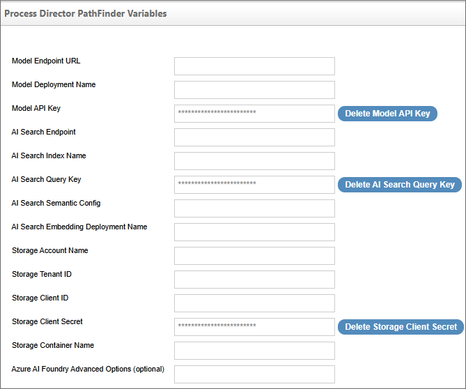

This topic discusses a feature that is under active development, and is subject to change without notice.
This topic discusses a feature that is under active development, and is subject to change without notice.
This topic discusses a feature that is under active development, and is subject to change without notice.
For Process Director v6.1.500 and higher, administrators of installations using the Subscription license will have access to the Approvia AI Variables page. Approvia AI is the name BP Logix has given to an online help system that uses Microsoft's Azure AI Foundry to provide an online help system within the product, based on the published product documentation. This feature was created for customers using the platform bases Approvia and PubPro products, which are approval platforms designed as Process Director-based custom applications.
Installations with custom applications can have the capability of using Approvia AI, trained on help documentation for their custom applications, to provide their users with an AI chatbot to ask questions about using the custom applications. Use of custom Approvia AI implementations would require assistance from BP Logix.
Installations that use Approvia AI can access AI logs usage in the internal logs at Logging Level 1. Approvia AI log entries will include time, request counts, and approximate request size.
In most cases, the settings on this page will be configured by BP Logix personnel, and only for Cloud-based installations, using the BP Logix Azure platform. Otherwise, the settings on this page will be blank. BP Logix will not provide any additional guidance, beyond the brief explanations given on this page, for using or configuring the Azure AI Foundry for Approvia AI.
When implemented, a Approvia AI icon will appear in the user interface of the product, as described in the User Interface topic of the Implementer's Guide. This icon will open the UI for this feature, which appears as a chatbot window in which users can ask the AI agent for information about, or help with, using Process Director (or the PubPro or Approvia products).
The Approvia AI Variables page contains the properties listed below.

This is the fully-qualified URL of the deployed model endpoint in Azure AI Foundry, which will be used to send inference requests.
The Name of the model deployment that was created Azure AI Foundry to host the AI model that was trained on the relevant product documentation.
API key used to authenticate requests to the model endpoint. This field is obscured for security reasons.
The base URL of the Azure AI Search service used for indexing and querying data.
Name of the Azure AI Search index used for semantic queries.
Query key used to authenticate read-only access to the Azure AI Search index. This field is obscured for security reasons.
The name of the semantic configuration within the Azure AI Search index, used to enable semantic ranking and improve search relevance.
The name of the deployed embedding model in Azure OpenAI used for vector search operations.
Name of the Azure Storage Account used to store files or documents accessed by the AI system.
Azure Active Directory Tenant ID associated with the storage account. Required for authentication.
Client ID (Application ID) of the Azure AD app registration used to access the storage account.
Client secret for the Azure AD app registration. Used for secure authentication to storage. This field is obscured for security reasons.
Name of the blob container within the Azure Storage Account where files or documents are stored.
a JSON-formatted string containing the advanced or additional options to make Approvia AI work.
For Process Director v6.1.600 and higher, a report on AI usage for your organization is available at the bottom of this page.

The Load Usage Data button will, when clicked, retrieve the usage statistics from your AI server to produce a report of AI usage. The report is broken down by overall organization, request type, and top user statistics.

When the report is displayed, you can click the Refresh button to load the statistics that have been updated since the report was last run. This report enables you to monitor AI usage by your organization to determine whether your usage is running within the usage token limits of your AI service.